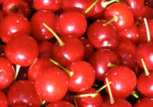
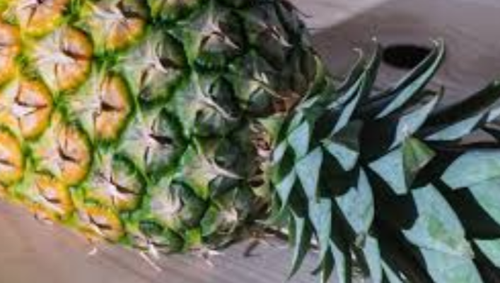
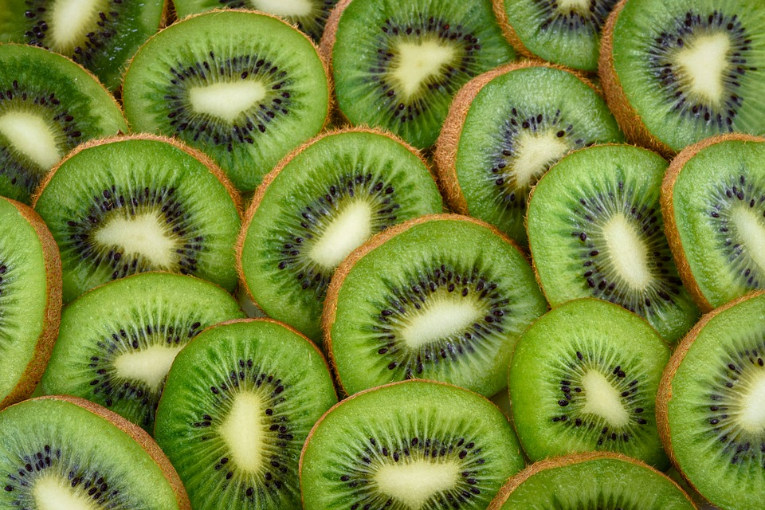

This weeks fruit

Cherry Facts
Cherrys have a lot of differnt facts and cool stuff about them
-Facts-
-The cherry fruit is part of the Rosaceae family which also includes almonds, peaches, apricots and plums.
-They are small and fleshy, red or reddish black fruits that contain a hard seed on the inside.
-It is believed the Romans discovered this fruit in Asia Minor around 70 BC.
-The word ‘cherry’ comes from the Turkish town of Cerasus.
-The German word Kirsch – the cherry liqueur comes from the word karshu. This is the name given to the cherries that were first cultivated in Mesopotamia in 8 BC.
Next weeks fruit is Pineapple

-Pineapple have a lot of differnt facts and cool stuff about them
-Facts-
-Pineapples regenerate! You can plant pineapple leaves to grow a new plant.
-Pineapples contain the bromelain enzyme which can break down proteins, so you can use them to tenderize meat.
- Hawaii produces about 1/3 of all pineapples in the world.
-Pineapples are a cluster of hundreds of fruitlets.
-Pineapples take about 18-20 months to become ready to harvest.
-Pineapples are native to South America before Christopher Columbus discovered them in 1493.
-Pineapple is the only edible fruit of its kind, the Bromeliads.
-One pineapple plant can produce one pineapple at a time.
-Pineapples ripen faster upside down.
The week after that is Kiwi

-Kiwi Facts-
Kiwis have a lot of differnt facts about them
-Facts-
-The kiwi is a brown fuzz covered green fruit.
-The fuzzy little kiwi also packs in the vital nutrients vitamin E, copper, vitamin K, choline, magnesium, and phosphorus.
-The kiwifruit is higher in vitamin C per ounce than most other fruits
About US
Lily-I play volleyball and basketball-My favorite position in volleyball is outside hitter and in basketball i like point graurd
Riliegh- I love to ride my mini rhino- my favorite place to ride my mini rhino is behind my house in the feild
Makalya- I play volleyball and softball- my favorite position in softball is first base and I am outside hitter in volleyball
We are in 7th grade
We live in Missouri as well